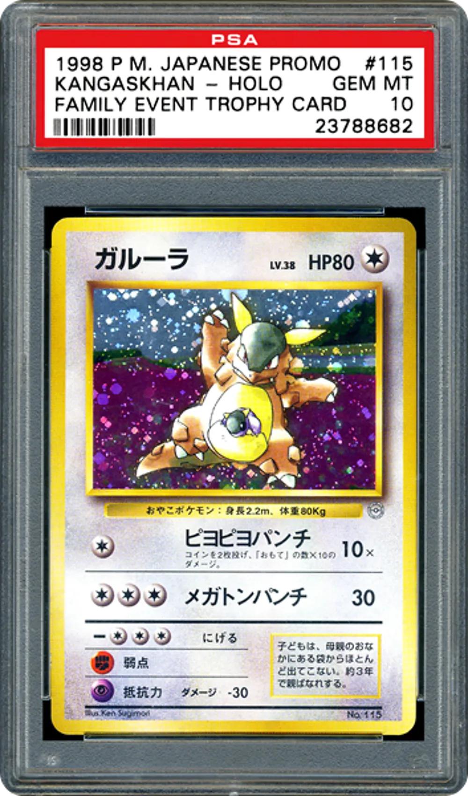
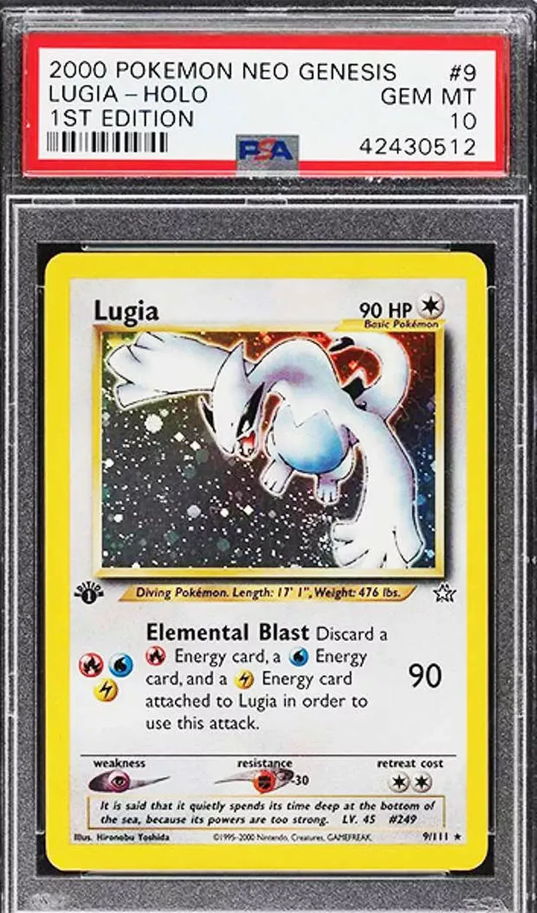

Considerada a carta mais rara do mundo, lançada no Japão em 1998.
Carta muito famosa de 1999, extremamente valorizada por colecionadores.

Carta distribuída em eventos familiares no Japão em 1998.
Carta especial dada em campeonatos mundiais de Pokémon.

Carta rara da coleção Neo Genesis lançada no ano 2000.
Ver mais